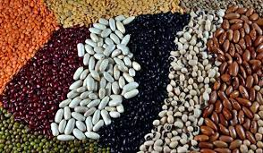
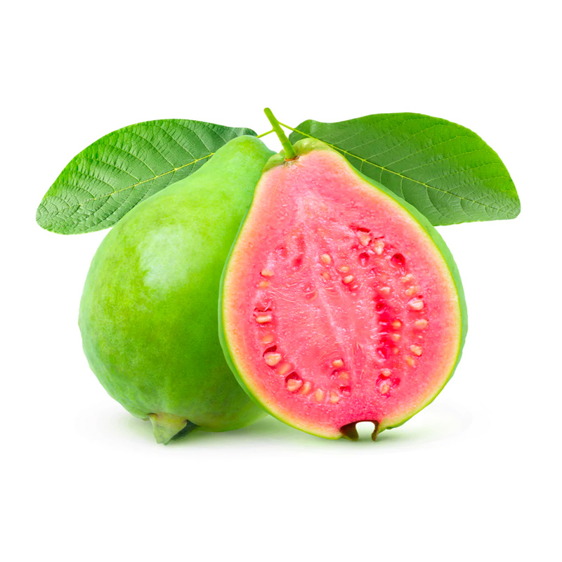

Food Crops
Crops that are grown to feed human populations are called food crops. There are a number of food crops grown in the country, some of the most important ones are:

Rice
Rice is predominantly a Kharif crop. It covers 1/3rd of the total cultivated area of India. It provides food to more than half of the Indian population. Rice is produced in almost all states, but the most popular ones are West Bengal, Punjab, and Uttar Pradesh. Other rice-growing states include Tamil Nadu, Assam, Andhra Pradesh, and so forth. It is also grown in Haryana, Madhya Pradesh, Kerala, and so forth. Rice requires about 150-300 cm of rainfall and deep clayey and loamy soil. The average temperature required throughout the life period ranges from 21 to 37°C. Crop of rice is grown by various methods like dry or semi-dry upland cultivation, broadcasting seeds, sowing the seeds behind the plow, and so forth.

Wheat
Wheat is the second most important crop in India following rice. It is part of the rabi crop and is a staple food in north and northwestern India. It is a winter crop and needs low temperatures and the ideal temperature for its cultivation is between 10-15°C at the time of sown and 21-26°C at the time of harvest. Wheat grows well in rainfall less than 100 cm and more than 75 cm. The most suitable soil for the cultivation of wheat is well-drained fertile loamy soil and clayey soil. The top three wheat-producing states are Uttar Pradesh, Punjab, and Haryana.
<
Millets
\Coarse cereals and millets are short-duration warm-weather crops used for both food and fodder. Important millets are Jowar, Bajra, Ragi, and so forth. They are grown in areas with high temperatures and are called dryland crops because rainfall of 50-100 cm is required for their growth. They can be grown in an inferior alluvial or loamy soil. The top three states for their production are Maharashtra, Karnataka, and Rajasthan.
Maize
Maize is globally known as the queen of cereals because it has the highest genetic yield potential among cereals. It is grown in the monsoon season and is accompanied by high temperatures and rainfall. Maize is grown successfully in a variety of soils from loamy to clay loam. It is a sensitive crop to moisture stress particularly excess soil moisture and salinity stresses.
Pulses
Most of the pulses are leguminous crops and provide proteins to the vegetarian population. Some of the major pulses of India are Gram, tur or arhar, matar, etc. Gram and tur are the most important pulses. As the human population depends upon crops for their food production, hence proper production techniques and agriculture implements should be used to cultivate them

Field Mustard
description :Field Mustard, scientifically known as Brassica rapa subsp. oleifera, is a cool-season annual or biennial plant belonging to the Brassicaceae family, which also includes other well-known crops such as cabbage, broccoli, and kale. It is widely cultivated for its seeds, which are used to produce mustard oil, and its tender leaves, which are consumed as a leafy vegetable.

Cucumber
description :Cucumber, scientifically known as Cucumis sativus, is a widely cultivated vine plant belonging to the Cucurbitaceae family, which also includes other popular crops such as squash, pumpkin, and watermelon. Cucumbers are primarily grown for their crisp, refreshing fruits, which are commonly eaten raw in salads, sandwiches, and pickles.

Watermelon
description :Watermelon (Citrullus lanatus) is a vine-like flowering plant with large, round or oblong fruits characterized by their juicy, sweet flesh and dark green rind with light green stripes or patches. It belongs to the Cucurbitaceae family and is consumed fresh as a hydrating summer fruit or used in beverages, salads, and desserts.
Guava
description :Guava (Psidium guajava) is a tropical fruit-bearing tree native to Central America. Its fruits are round or oval with a greenish-yellow skin when ripe, and the flesh can vary in color from white to pink or red, depending on the variety. Guava is prized for its sweet, aromatic flavor and is eaten fresh, juiced, or used in jams, jellies, and desserts.

Strawberry
description :Strawberry (Fragaria × ananassa) is a low-growing perennial plant with white flowers and small, red, heart-shaped fruits. It belongs to the Rosaceae family and is widely cultivated for its sweet and tangy berries, which are consumed fresh, added to salads, used in desserts, or processed into jams, preserves, and sauces

Mango Ginger
description :Mango Ginger (Curcuma amada) is a type of ginger native to India and Southeast Asia. Despite its name, it is not related to mangoes but gets its name from its similar aroma. The plant produces rhizomes with a tangy flavor reminiscent of both mango and ginger, often used in culinary applications, pickles, chutneys, and traditional medicine.